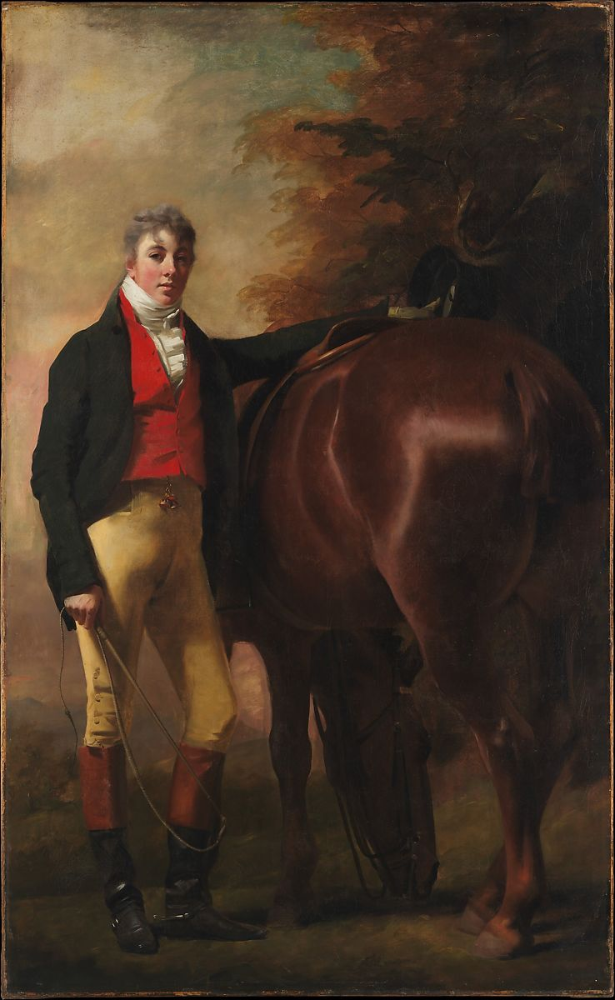

<head>
<meta charset="UTF-8" />
<meta name="keywords" content="drawing, painting" />
<meta name="description" content="drawings by Sunjy" />
<title>Sunjy</title>
<link rel="shortcut icon" type="image/x-icon" href="../../mImages/mCommon/favicon.ico" media="screen" />
<link rel="stylesheet" type="text/css" href="../../mCsses/mCommon/mCssA.css" />
<link rel="stylesheet" type="text/css" href="../../mCsses/mCommon/mCssB.css" />
<link rel="stylesheet" type="text/css" href="../../mCsses/mCommon/mCssC.css" />
<link rel="stylesheet" type="text/css" href="../../mCsses/mCommon/mCssD.css" />
<link rel="stylesheet" type="text/css" href="../../mCsses/mContent/mCssA.css" />
<link rel="stylesheet" type="text/css" href="../../mCsses/mContent/mCssB.css" />
<link rel="stylesheet" type="text/css" href="../../mCsses/mContent/mCssC.css" />
<link rel="stylesheet" type="text/css" href="../../mCsses/mContent/mCssD.css" />
</head>
<script type="text/javascript" src="../../mScripts/mContent/mContentAA.js" /></script>
<script type="text/javascript" src="../../mScripts/mContent/mContentAB.js" /></script>
<script type="text/javascript" src="../../mScripts/mContent/mContentAC.js" /></script>
<script type="text/javascript" src="../../mScripts/mContent/mContentAD.js" /></script>
<script type="text/javascript"></script> 
<script type="text/javascript">
document.write('<div class="mImgAbsolute"></div>');
/*
document.write('<p class="mFontSizeBColor" />From a white paper...</p>');
document.write('<table class="center"><tr><td>');
document.write('');
document.write('</td></tr></table>');
*/
</script>


<script type="text/javascript">
document.write('<p class="mFontSizeBColor" />George Harley Drummond</p>');
document.write('<p class="mFontSizeSColor" />By Sir Henry Raeburn, ca. 1808–9. The sitter, dressed in riding clothes, is George Harley Drummond of Stanmore, Middlesex, and Drumtochty. He married in 1801 and his son George, shown in <i>The Drummond Children</i>, was born in 1802. The foreshortened view of the grazing bay horse is the most complex part of the composition, though not the most important. It is curious, therefore, that the animal&#39;s hindquarters should be so prominently displayed.</p>');
document.write('<table class="center" /><tr><td>');
document.write('The Drummond Children</i>, was born in 1802. The foreshortened view of the grazing bay horse is the most complex part of the composition, though not the most important. It is curious, therefore, that the animal&#39;s hindquarters should be so prominently displayed." />');
document.write('</td></tr></table>');
</script>


